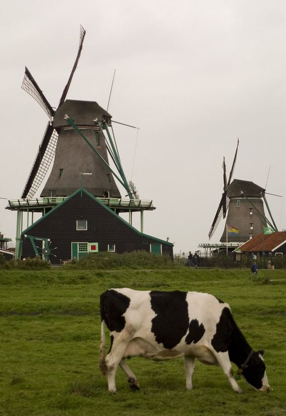
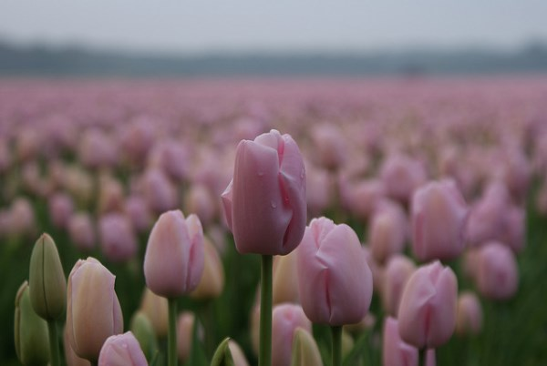
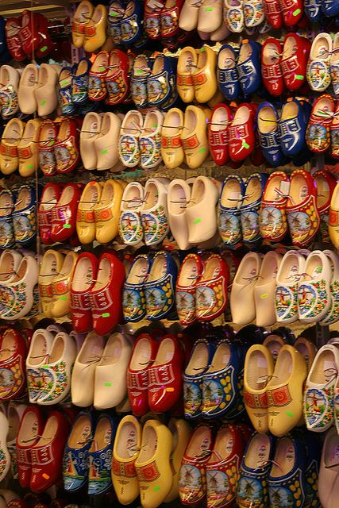

Символы Голландии
Ветряные мельницы
Крылатые мельницы – античное изобретение, но именно голландцы заставили их работать в полную мощь. К XIX веку число мельниц в Голландии перевалило за девять тысяч, и хотя сегодня их осталось значительно меньше – примерно тысяча, представить себе современный голландский пейзаж без ветряных мельниц со степенно вращающимися лопастями просто невозможно. Голландцам всегда приходилось отвоевывать землю у воды, поэтому здесь так много мельниц, которые использовались в первую очередь для осушения почвы. С помощью мельниц Голландии удалось за несколько веков увеличить свою территорию на десять процентов. Где в Голландии увидеть самые красивые ветряные мельницы. Классический голландский пейзаж с мельницами можно увидеть практически в любом уголке Нидерландов. Самые известные ветряные мельницы находятся в деревне Киндердейк, музее Заансе-Сханс и в городе Схидам.
Тюльпаны
Еще один символ Голландии – тюльпаны, которые попали сюда из Турции в XVI веке. Цветы стали так популярны среди представителей самых разных социальных прослоек, что страну буквально лихорадило от тюльпанного помешательства. Перекапывание чужого сада в поисках драгоценных луковиц стало обычным делом для желающих разбогатеть или добыть в свою коллекцию редкий сорт модного растения. В Амстердаме устраивались тюльпанные торги с небывалым для биржи оборотом денежных средств, чуть позже тюльпаномания накрыла всю страну. Голландский рынок тюльпанов резко обвалился в середине XVII века, нанеся экономике Нидерландов весомый ущерб. Сегодня уже не купить поместье за пару цветочных луковиц, но любовь к тюльпанам сохранилась в душе каждого голландца. Когда в Голландии цветут тюльпаны. Последняя неделя апреля и первая неделя мая – лучшее время, чтобы посмотреть на цветение тюльпанов в Голландии. Где самые красивые тюльпаны в Голландии. Большой популярностью пользуется у туристов парк цветов Кёкенхоф. Более 7 миллионов тюльпанов, нарциссов и гиацинтов цветут в голландском парке с марта по май.

Кломпы
Деревянные башмаки – вещь очень практичная, но не для нашего времени. Тем не менее, многие голландские крестьяне и рыбаки носят кломпы до сих пор. Привычка носить башмаки из дерева появилась у голландцев в средние века, когда самые бедные слои населения не могли себе позволить настоящую обувь. Сегодня в Нидерландах ежегодно производится около пяти миллионов пар деревянной обуви – в основном для туристов. А те, кто сомневается в пользе ношения деревянных башмаков для здоровья ног, могут купить мягкие домашние тапочки, повторяющие традиционную форму кломпов. И все же для прогулок по росистым голландским полям поролоновые тапки не подойдут – здесь дерево нужно. Где купить настоящие голландские кломпы. В Амстердаме трудно найти настоящие деревянные башмаки. Приобрести аутентичную голландскую обувь можно только в провинции, например, во Фрисландии. Сколько стоят голландские башмаки. Цена на кломпы колеблется в районе 30-40 евро.